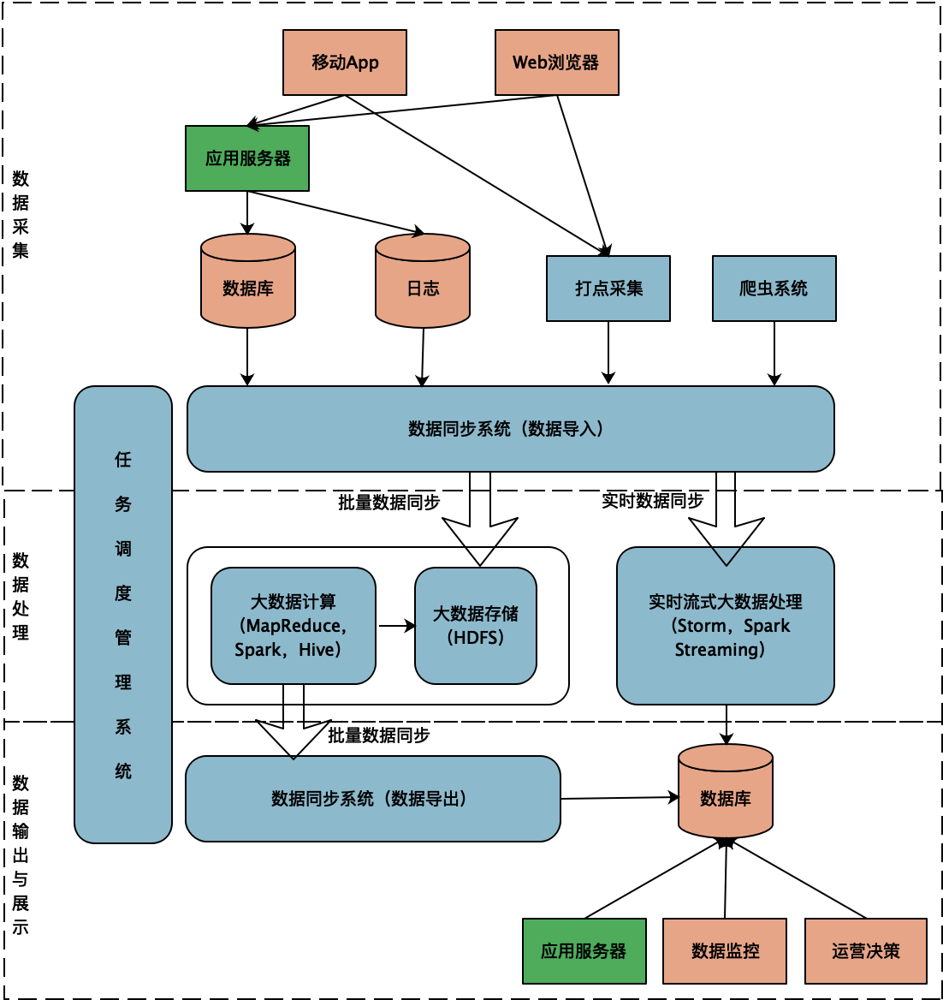
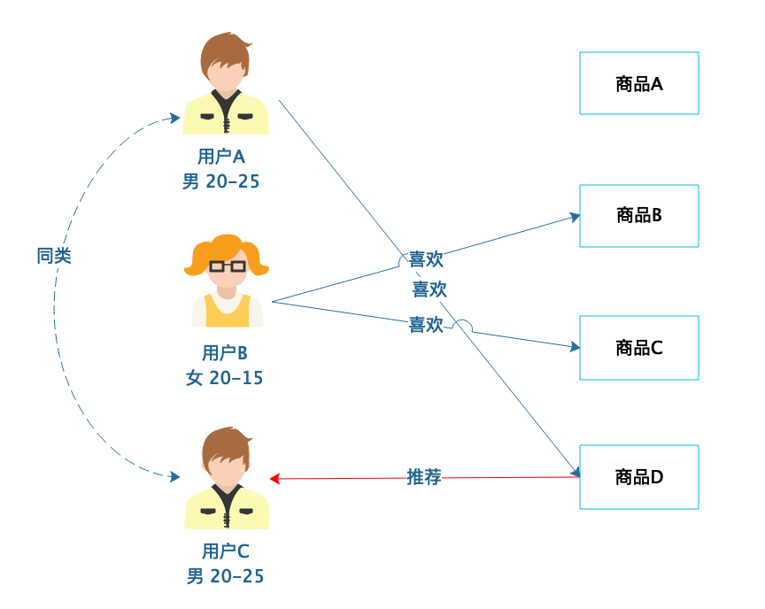
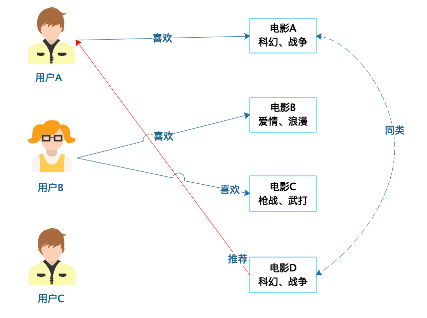
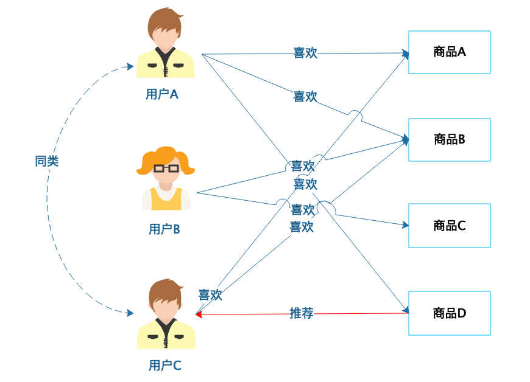
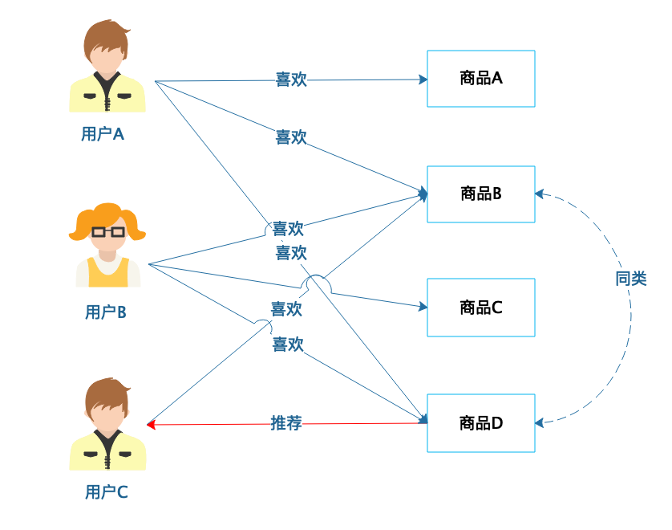
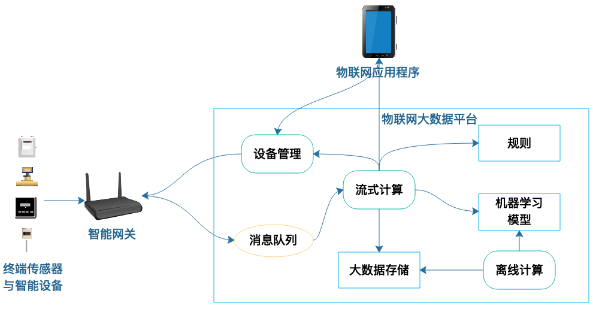

- 00 开篇词 掌握软件开发技术的第一性原理.md
- 01 程序运行原理：程序是如何运行又是如何崩溃的？.md
- 02 数据结构原理：Hash表的时间复杂度为什么是O(1)？.md
- 03 Java虚拟机原理：JVM为什么被称为机器（machine）？.md
- 04 网络编程原理：一个字符的互联网之旅.md
- 05 文件系统原理：如何用1分钟遍历一个100TB的文件？.md
- 06 数据库原理：为什么PrepareStatement性能更好更安全？.md
- 07 答疑 Java Web程序的运行时环境到底是怎样的？.md
- 07 编程语言原理：面向对象编程是编程的终极形态吗？.md
- 08 软件设计的方法论：软件为什么要建模？.md
- 09 软件设计实践：如何使用UML完成一个设计文档？.md
- 10 软件设计的目的：糟糕的程序员比优秀的程序员差在哪里？.md
- 11 软件设计的开闭原则：如何不修改代码却能实现需求变更？.md
- 12 软件设计的依赖倒置原则：如何不依赖代码却可以复用它的功能？.md
- 13 软件设计的里氏替换原则：正方形可以继承长方形吗？.md
- 14 软件设计的单一职责原则：为什么说一个类文件打开最好不要超过一屏？.md
- 15 软件设计的接口隔离原则：如何对类的调用者隐藏类的公有方法？.md
- 16 设计模式基础：不会灵活应用设计模式，你就没有掌握面向对象编程.md
- 17 设计模式应用：编程框架中的设计模式.md
- 18 反应式编程框架设计：如何使程序调用不阻塞等待，立即响应？.md
- 19 组件设计原则：组件的边界在哪里？.md
- 20 答疑 对于设计模式而言，场景到底有多重要？.md
- 20 领域驱动设计：35岁的程序员应该写什么样的代码？.md
- 21 分布式架构：如何应对高并发的用户请求.md
- 22 缓存架构：如何减少不必要的计算？.md
- 23 异步架构：如何避免互相依赖的系统间耦合？.md
- 24 负载均衡架构：如何用10行代码实现一个负载均衡服务？.md
- 25 数据存储架构：如何改善系统的数据存储能力？.md
- 26 搜索引擎架构：如何瞬间完成海量数据检索？.md
- 27 微服务架构：微服务究竟是灵丹还是毒药？.md
- 28 高性能架构：除了代码，你还可以在哪些地方优化性能？.md
- 29 高可用架构：我们为什么感觉不到淘宝应用升级时的停机？.md
- 30 安全性架构：为什么说用户密码泄漏是程序员的锅？.md
- 31 大数据架构：大数据技术架构的思想和原理是什么？.md
- 32 AI与物联网架构：从智能引擎到物联网平台.md
- 33 区块链技术架构：区块链到底能做什么？.md
- 33 答疑 互联网需要解决的技术问题是什么？.md
- 34 技术修炼之道：同样工作十几年，为什么有的人成为大厂架构师，有的人失业？.md
- 35 技术进阶之道：你和这个星球最顶级的程序员差几个等级？.md
- 36 技术落地之道：你真的知道自己要解决的问题是什么吗？.md
- 37 技术沟通之道：如何解决问题？.md
- 38 技术管理之道：你真的要转管理吗？.md
- 38 答疑 工作中的交往和沟通，都有哪些小技巧呢？.md
- 加餐 软件设计文档示例模板.md
- 结束语 期待未来的你，成为优秀的软件架构师.md
32 AI与物联网架构：从智能引擎到物联网平台
当我们在说大数据技术的时候，说的可能是几种差别很大的技术。
一种是大数据底层技术，指的就是各种大数据计算框架、存储系统、SQL引擎等等，这些技术比较通用，经过十几年的优胜劣汰，主流的技术产品相对比较集中，主要就是我上篇专栏讨论的MapReduce、Spark、Hive、Flink等技术产品。
一种是大数据平台技术，Spark、Hive这些大数据底层技术产品不像我们前面讨论过的分布式缓存、分布式消息队列，在处理用户请求的应用中，使用这些技术产品的API接口就可以了。大数据计算的数据通常不是用户请求的数据，计算时间也往往超过了一次用户请求响应能够接受的时间。但是大数据的计算结果又常常需要在用户交互过程中直接呈现，比如电商常用的智能推荐，用户购买一个商品，系统会推荐可能感兴趣的商品，这些推荐的商品就是大数据计算的结果。所以在互联网系统架构中，需要把处理用户请求的在线业务系统和大数据计算系统打通。这就需要一个大数据平台来完成。
此外还有一种技术是数据分析与机器学习算法，上面提到的商品智能推荐就是这样一种算法，通过算法向用户呈现他感兴趣的商品，使互联网应用看起来好像有某种智能一样。
大数据平台架构
我们先看下大数据平台架构。上面说过，大数据平台主要就是跨越需要长时间处理的大数据计算和需要实时响应的互联网应用之间的鸿沟，使系统成为一个完整的整体。
一个典型的大数据平台架构如下：

整个大数据平台可以分为三个部分：数据采集、数据处理和数据输出。
首先要有数据，数据主要有两个来源，一方面是应用服务器以及前端App实时产生的数据、日志以及埋点采集的数据，另一方面是外部爬虫和第三方数据。
通过大数据平台的数据同步系统，这些数据导入到HDFS中。由于不同数据源格式不同，数据源存储系统不同，因此需要针对不同的数据源，开发不同的同步系统。同时，为了能够更好地对写入到HDFS的数据进行分析和挖掘，还需要对这些数据进行清洗、转换，因此数据同步系统实际上承担的是传统数据仓库ETL的职责，即数据的抽取（Extract）、转换（Transform）、载入（Load）。
写入到HDFS的数据会被MapReduce、Spark、Hive等大数据计算框架执行。数据分析师、算法工程师提交SQL以及MapReduce或者Spark机器学习程序到大数据平台。大数据平台的计算资源通常总是不足的，因此这些程序需要在任务调度管理系统的调度下排队执行。
SQL或者机器学习程序的计算结果写回到HDFS，然后再通过数据同步系统导出到数据库，应用服务器就可以直接访问这些数据，在用户请求的时候为用户提供服务了，比如店铺访问统计数据，或者智能推荐数据等。
所以有了大数据平台，用户产生的数据就会被大数据系统进行各种关联分析与计算，然后又应用于用户请求处理。只不过这个数据可能是历史数据，比如淘宝卖家只能查看24小时前的店铺访问统计。
大数据计算也许需要几个小时甚至几天，但是用户有时候可能需要实时得到数据。比如想要看当前的访问统计，那么就需要用到大数据流计算了。来自数据源的数据实时进入大数据流计算引擎Spark Streaming等，实时处理后写入数据库。这样卖家既可以看到历史统计数据，又可以看到当前的统计数据。
智能推荐算法
大数据平台只是提供了数据获取、存储、计算、应用的技术方案，真正挖掘出这些数据之间的关系，让数据发挥价值的是各种机器学习算法。这些各种算法中，最常见的大概就是智能推荐算法了。
我们在淘宝购物，在头条阅读新闻，在抖音刷短视频，背后其实都有智能推荐算法。这些算法不断分析、计算我们的购物偏好、浏览习惯，然后为我们推荐可能喜欢的商品、文章、视频。事实上，这些产品的推荐算法是如此智能、高效，以至于我们常常一打开淘宝，就买个不停；一打开抖音，就停不下来。
我们看几种简单的推荐算法，了解一下推荐算法背后的原理。
基于人口统计的推荐是相对比较简单的一种推荐算法。根据用户的基本信息进行分类，然后将商品推荐给同类用户。

用户A和用户C的年龄相近，性别相同，那么可以将用户A和用户C划分为同类。用户A喜欢商品D，那么推测用户C可能也喜欢这个商品，系统就可以将这个商品推荐给用户C。
图中示例比较简单，在实践中，还应该根据用户收入、居住地区、学历、职业等各种因素进行用户分类，以使推荐的商品更加准确。
基于商品属性的推荐和基于人口统计的推荐相似，只是根据商品的属性进行分类，然后根据商品分类进行推荐。

电影A和电影D都是科幻、战争类型的电影，如果用户A喜欢看电影A，那么很有可能他也会喜欢电影D，就可以给用户A推荐电影D。
这和我们的生活常识也是相符合的，如果一个人连续看了几篇关于篮球的新闻，那么很大可能再给他推荐一篇篮球的新闻，他还是会有兴趣看。
基于用户的协同过滤推荐，根据用户的喜好进行用户分类，然后根据用户分类进行推荐。

这个例子里，用户A和用户C都喜欢商品A和商品B，根据他们的喜好可以分为同类。然后用户A还喜欢商品D，那么将商品D推荐给用户C，他可能也会喜欢。
现实中，跟我们有相似喜好品味的人，也常常被我们当做同类，他们喜欢的其他东西，我们也愿意去尝试。
基于商品的协同过滤推荐，则是根据用户的喜好对商品进行分类，然后根据商品分类进行推荐。

这个例子中，喜欢商品B的用户A和B都喜欢商品D，那么商品B和商品D就可以分为同类。那么对于同样喜欢商品B的用户C，很有可能也喜欢商品D，就可以将商品D推荐给用户C。
这里描述的推荐算法比较简单，事实上，要想做好推荐其实是非常难的。用户不要你觉得他喜欢，而要他觉得喜欢，有很多智能推荐的效果不好，被用户吐槽“人工智障”。推荐算法的不断优化需要不断收集用户反馈，不断迭代算法和升级数据。
物联网大数据架构
物联网的目标是万物互联，将我们生产生活有关的一切事物都通过物联网连接起来。家里的冰箱、洗衣机、扫地机器人、空调都通过智能音响连接起来。汽车、停车场、交通信号灯都通过交通指挥中心连接起来。这些被连接的设备数据再经过分析计算反馈给工厂、电厂、市政规划等生产管理部门，控制生产投放。
物联网架构的关键是终端设备数据的采集、处理与设备的智能控制，背后依然是大数据与AI算法。

终端设备负责采集现场数据，这些数据被汇总到智能网关，智能网关经过初步的转换、计算后将数据发送给物联网大数据平台，大数据平台通过消息队列接收发送上来的各种数据。
由于物联网终端设备在现场实时运行，需要实时控制，因此大数据平台也需要实时处理这些数据。大数据流计算引擎会从消息队列中获取数据进行实时处理。
对于一些简单的数据处理来说，流式计算利用配置好的规则进行计算就可以了，而复杂的处理还需要利用机器学习模型。机器学习模型是通过大数据平台离线计算得到的，而离线计算使用的数据则是流计算从消息队列中获取的。
流式计算的结果通常是终端设备的控制信息，这些信息通过设备管理组件被发送给智能网关，智能网关通过边缘计算，产生最终的设备控制信号，控制终端智能设备的动作。而物联网管理人员也可以通过应用程序直接远程控制设备。
随着5G时代的到来，终端通信速度的提升和费用的下降，物联网也许会迎来更加快速的发展。
小结
很多学习大数据技术的人是在学习大数据的应用。通常情况下，作为大数据技术的使用者，我们不需要开发Hadoop、Spark这类大数据低层技术产品，只需要使用、优化它们就可以了。
在大数据应用中，我们需要开发的是大数据平台。大数据平台的各种子系统，比如数据同步、调度管理这些，虽然都有开源的技术可以选择，但是每家公司的大数据平台都是独一无二的，因此还是要进行各种二次开发，最终平台的整合和完成都需要我们来开发。
而真正使数据发挥价值，使大数据平台产生效果的，其实是算法，是算法发现了数据的关联关系，挖掘出了数据的价值。因此我们应用大数据也要关注大数据算法。
思考题
最后给你留一道思考题吧。大数据与AI算法在计算机系统中扮演着越来越重要的角色，在你的工作中，哪些地方可以使用大数据与AI算法提高效率，优化体验？
欢迎你在评论区写下你的思考，我会和你一起交流，也欢迎把这篇文章分享给你的朋友或者同事，一起交流一下。
© 2019 - 2023 Liangliang Lee. Powered by Vert.x and hexo-theme-book.